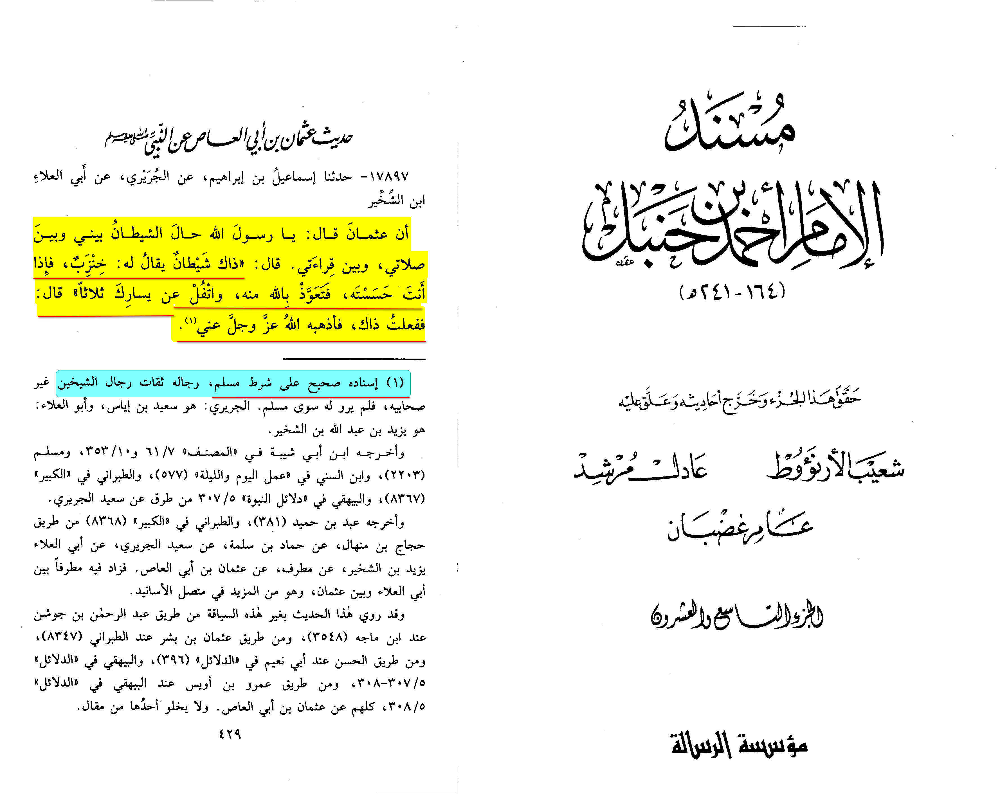

First of we must agree to a definition satan can’t cast out satan (mark 3:26-28) this was confirmed by church fathers commentaries
Now I am not gonna quote the Qur’ān because Christians are gonna cope about it but I am going to show the prophet himself casting out demons
Ya'laa ibn Murrah said:
I saw Allah's Messenger (sallallahu alaihe wa-sallam) do three things which no one before or after me saw. I went with him on a trip.
On the way, we passed by a woman sitting at the roadside with a young boy. She called out, 'O Messenger of Allah, this boy is afflicted with a trial,
and from him we have also been afflicted with a trial. I don't know how many times per day he is seized by fits.' He (sallallahu alaihe wa-sallam) said:
'Give him to me.' So she lifted him up to the Prophet.He (sallallahu alaihe wa-sallam) then placed the boy between himself and the middle of the saddle,
opened the boy's mouth and blew in it three times, saying, 'In the name of Allah, I am the slave of Allah, get out, enemy of Allah!' Then he gave the boy back
to her and said: 'Meet us on our return at this same place and inform us how he has fared.' We then went. On our return, we found her in the same place with three sheep.
When he said to her, 'How has your son fared?' She replied: 'By the One who sent you with the truth, we have not detected anything (unusual) in his behavior up to this time...
(Narrated by Ahmad in his Musnad, 4/170. Sheikh Shu'ayb Al Arna'ut declared this hadeeth to be authentic. This hadeeth is also reported in Al Mustadrak for Al Hakim and
Imam Al Dhahabi declared it to be authentic).
It is narrated that 'Uthman ibn Abi'l-'Aas said:
“When the Messenger of Allah (peace be upon him) appointed me as a governor of Al-Taai'if, I started to experience problems with my prayer, such that
I did not know what I was doing in my prayer. When I noticed that, I went to the Messenger of Allah (peace be upon him). He said, 'The son of Abi'l-'Aas?'
I said, 'Yes, O' Messenger of Allah.' He said, 'What brings you here?' I said, 'O' Messenger of Allah, I am experiencing problems with my prayers,
so that I do not know what I am doing in my prayer.' He said, 'That is the Shaytaan. Come closer.' So I came closer to him and squatted.
He tapped me on the chest three times with his hand and blew in my mouth, and said, 'Get out, enemy of Allah!' He did that three times, then he said,
'Go and get on with your work."'
(Sunan Ibn Maajah, Hadith no. 3548, Sheikh Albani declared this hadeeth to be authentic in Saheeh Ibn Majah, Hadith no. 3548).
Some people may object and say he didn’t know maybe muhammed lied to him in another hadith he came to him and told him that satan afflicted him
(musnad Ahmad 29/429/17897 Shaykh Shu’ayb Al-Arna’ut declared it to be authentic)

Check out the other cards within Proof for Islam for more proof. However this is more than enough for any sincere person already.
Sahih al-Bukhari 1125
Narrated Jundab bin `Abdullah:
Gabriel did not come to the Prophet (for some time) and so one of the Quraish women said, "His Satan has deserted him." So came the Divine Revelation:
"By the forenoon And by the night When it is still! Your Lord (O Muhammad) has neither Forsaken you Nor hated you." (93.1-3)
Siiig: why can’t the Qur’an be from the works of a spiritual being
Imam Fakhr al-Dīn ar-Rāzī ash-Shafi’ie (d. 604 AH) states:
« Know that when the Most High protested the truthfulness of Muhammad ﷺ by the Quran being revealed by the Lord of the worlds,
this was only known because of its excellence in the extreme end, and because it contains the stories of the predecessors without any discrepancy,
even though he did not engage in learning and benefiting. So the disbelievers used to say: why can't this be the throwing of jinn and devils like all
that is revealed to the priests? Allah Almighty answered that this is not easy for the devils because they are stoned by meteors and isolated from hearing
the words of the people of heaven, and to the speaker to say: knowledge of the prohibition of devils from that can only be obtained through the true Prophet's report.
So if we prove that Muhammad ﷺ is truthful by the eloquence of the Quran and his knowledge of the unseen, and it is impossible to prove that eloquence and knowledge of
the unseen are miraculous unless the prohibition of devils from that is proven, then the argument is invalid and its answer is: we do not accept that knowledge of the
prohibition of devils from that can only be obtained through the Prophet's saying, because we know by necessity that concern for the friend is stronger than concern
for the enemy, and we know by necessity that Muhammad ﷺ used to curse the devils and order people to curse them. So if this knowledge of the unseen was only obtained
by the throwing of devils, the disbelievers would be more deserving of such knowledge. Therefore, it was necessary for the power of the disbelievers to be equal to it,
but since it was not so, we learned that devils are prohibited from that, and they are isolated from knowledge of the unseen. »
‚Ä¢üìì {al-Tafsir al-Kabir | (24/170-171)}
The spiritual being argument fails by the Bible we provided church fathers commentaries, it also fails by logic as was presented by ar-Razi 800 years ago.
What if the Prophet was sent by a spiritual being?
This is a baseless theory with absolutely no proof behind it and is just a desperate attempt to try to refute Islam. Why exactly is a spiritual
being explanation better than the explanation that he was sent by Allah
Why would this spiritual being lie about it’s identity and say that it’s Allah when in reality it’s not
What would this spiritual being have to gain by inventing Islam and sending the Prophet peace be upon him?
If a Christian, Jew, Hindu, etc uses this argument we can just flip the argument back onto their religion
possible answer refutation:
A spiritual being doesn’t have to lie about it’s identity in order to do that. The spiritual being can just show itself and demonstrate its powers so that people will listen.
And since this spiritual being is going to a pagan people they would gladly worship him and put him in their pantheon
The spiritual being is going to a pagan people. They we already misguided. What’s the point of misguiding them even more and saying that there’s one god;
something that they were adverse to.